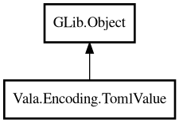

TomlValue
Object Hierarchy:

Description:
public class TomlValue : Object
Represents one TOML value.
Content:
Static methods:
- public static TomlValue ofBool (bool value)
Creates boolean value.
- public static TomlValue ofDouble (double value)
Creates double value.
- public static TomlValue ofInt (int64 value)
Creates integer value.
- public static TomlValue ofString (string value)
Creates string value.
- public static TomlValue table ()
Creates table value.
Methods:
- public TomlValue? @get (string key)
Returns child value by key.
- public bool? asBool ()
Returns boolean representation when this is bool value.
- public double? asDouble ()
Returns double representation when this is double value.
- public int64? asInt ()
Returns integer representation when this is int value.
- public string? asString ()
Returns string representation when this is string value.
- public bool isTable ()
Returns true when this value is table.
- public void put (string key, TomlValue value)
Sets child value for table.
- public TomlValueType type ()
Returns value type.
Inherited Members:
All known members inherited from class GLib.Object
- @get
- @new
- @ref
- @set
- add_toggle_ref
- add_weak_pointer
- bind_property
- connect
- constructed
- disconnect
- dispose
- dup_data
- dup_qdata
- force_floating
- freeze_notify
- get_class
- get_data
- get_property
- get_qdata
- get_type
- getv
- interface_find_property
- interface_install_property
- interface_list_properties
- is_floating
- new_valist
- new_with_properties
- newv
- notify
- notify_property
- ref_count
- ref_sink
- remove_toggle_ref
- remove_weak_pointer
- replace_data
- replace_qdata
- set_data
- set_data_full
- set_property
- set_qdata
- set_qdata_full
- set_valist
- setv
- steal_data
- steal_qdata
- thaw_notify
- unref
- watch_closure
- weak_ref
- weak_unref